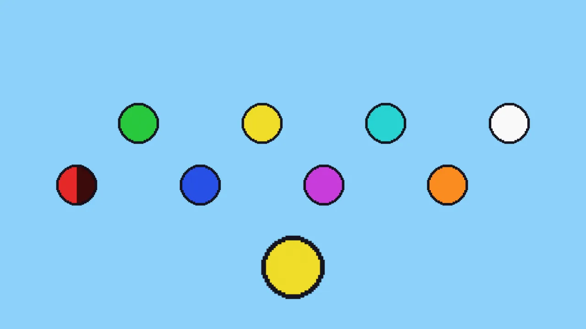
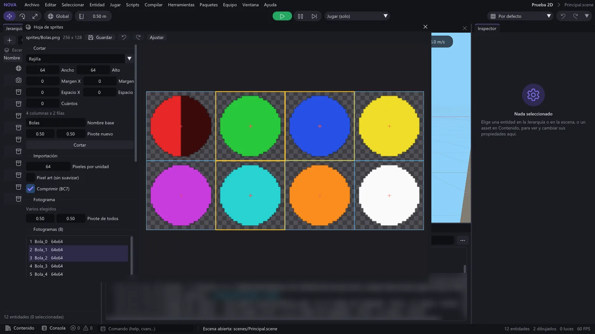
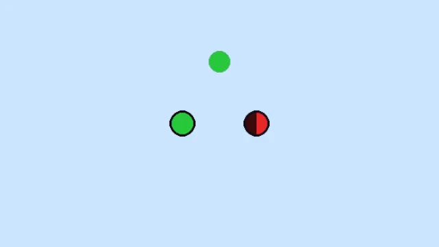
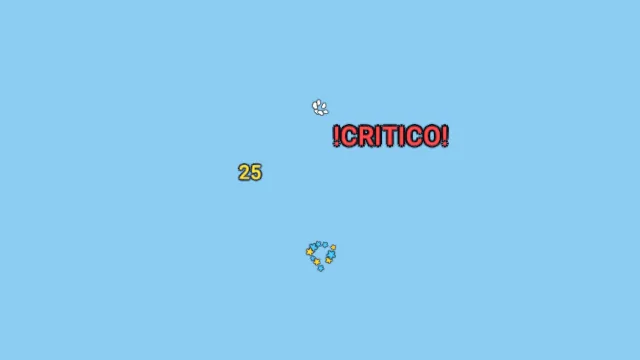
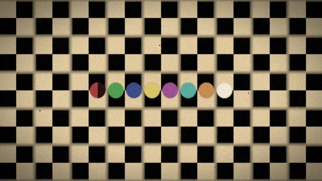
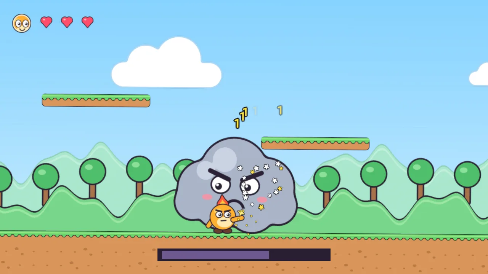

Juegos 2D: plataformas con disparos, jefes y dibujos con vida
En esta página
- Índice
- 1. La escena 2D
- 2. Sprites
- 3. Hojas de sprites y atlas
- Empaquetar imágenes sueltas (atlas)
- 4. Animación por fotogramas
- El Animador de sprites
- 5. Animación procedural (juice)
- 6. El contorno de dibujo
- 7. Efectos de juego: números de daño y estallidos
- 8. Capas de dibujo y orden
- 9. El aspecto de dibujos animados antiguos
- 10. Jefes por fases
- 11. En red
- 12. Rendimiento y memoria
- 13. Referencia de Lua
- 14. Físicas y personaje de plataformas
- 15. La plantilla «Plataformas 2D (Lua)»
- Qué hay en la escena
- Cómo se juega y qué hace cada script
- Cambiar el nivel
Nova Engine hace juegos 2D con el mismo editor, los mismos scripts Lua y la misma red que los 3D. Esta guía cuenta cómo montar un juego de plataformas y disparos con personajes dibujados, jefes por fases y fondos por capas, con dos aspectos posibles:
- Arcade moderno: dibujo vectorial limpio, colores planos y vivos, un contorno oscuro y grueso alrededor de cada personaje y objeto, formas redondeadas y personajes muy expresivos, casi sin sombreado. La animación es sobre todo procedural (se estira al saltar, se aplasta al aterrizar, se balancea al andar, destella al recibir un golpe).
- Dibujos animados clásicos: cada movimiento dibujado a mano fotograma a fotograma, a 24 fotogramas por segundo, con el filtro «Cartoon antiguo» (grano de película, viñeta, tono cálido, rayas y parpadeo).
Las dos cosas se mezclan: un personaje con animación por fotogramas también puede llevar contorno y «juice».
Esta guía cubre lo que se dibuja (sprites, animación, contorno, efectos) y la plantilla. Las otras dos piezas de un juego 2D tienen su propia guía:
- Físicas 2D: cuerpos, colisionadores, sensores, plataformas de un sentido y el personaje de plataformas
(
CharacterController2Dcon coyote time, buffer de salto, dash y parry). - Mundo 2D: la vista 2D del editor, los fondos por capas (ParallaxLayer), la cámara de plataformas (Camera2D) y los niveles por tiles (Tilemap y TileSet).

Índice#
- La escena 2D
- Sprites
- Hojas de sprites y atlas
- Animación por fotogramas
- Animación procedural (juice)
- El contorno de dibujo
- Efectos de juego: números de daño y estallidos
- Capas de dibujo y orden
- El aspecto de dibujos animados antiguos
- Jefes por fases
- En red
- Rendimiento y memoria
- Referencia de Lua
- Físicas y personaje de plataformas
- La plantilla «Plataformas 2D (Lua)»
1. La escena 2D#
Un juego 2D es una escena normal vista con una cámara ortográfica de frente:
- En la cámara: Proyección: Ortográfica y Tamaño ortográfico = la mitad del alto que se ve, en unidades (5 = se ven 10 unidades de alto). La cámara mira hacia −Z (la rotación por defecto) desde Z = 10, por ejemplo. Para que siga al jugador, añádele 2D > Cámara 2D (mundo-2d.md). En el editor, el botón 2D del visor pone la vista de frente, ortográfica.
- Los sprites viven en el plano XY (Z = 0). La Z solo sirve para desempatar el orden (lo más cercano a la cámara, delante) y para que un objeto 3D tape lo que tiene detrás.
- En el Entorno: Tonemapping: Ninguno. Con «Ninguno», los colores de los dibujos salen exactamente como en el programa de dibujo (con ACES, el tonemapping de cine de las escenas 3D, se ven más oscuros y apagados). Quita también el bloom, la viñeta y la oclusión ambiental si no los quieres.
- Una unidad del mundo = 100 píxeles de los dibujos por defecto (lo cambia cada hoja con Píxeles por unidad).
El TAA (antialiasing temporal) no estropea los sprites: con TAA se dibujan sobre la imagen ya resuelta, sin el temblor de la cámara, así que no se emborronan ni dejan estela al moverse. El bloom, los filtros de cámara y el resto del postproceso sí les llegan.
2. Sprites#
Añadir componente > 2D > Sprite (SpriteRenderer en Lua). Dibuja una imagen, o un fotograma de una hoja de sprites,
en el plano de la entidad. Sin imagen dibuja un cuadrado blanco de 1 × 1: sirve para probar con bloques de colores antes
de tener dibujos.
| Campo | Lua | Qué hace |
|---|---|---|
| Imagen | sprite |
La textura: una imagen suelta o una hoja de sprites |
| Fotograma | frame |
El fotograma de la hoja por su nombre (vacío = el primero). Con un Animador de sprites, lo pone él |
| Color | color |
Tinte (multiplica el dibujo); el alfa es la opacidad |
| Voltear X / Y | flipX, flipY |
Espejo sobre el pivote: un personaje que mira a la izquierda |
| Pivote del fotograma / Pivote | useSpritePivot, pivot |
El punto del dibujo que cae en el origen de la entidad (los pies) |
| Capa de dibujo / Orden en la capa | sortingLayer, orderInLayer |
Qué se dibuja delante (ver Capas) |
| Píxeles por unidad | pixelsPerUnit |
0 = los de la hoja |
| Luz | lighting |
"Unlit" (el dibujo tal cual) o "Lit" (luz 2D: ambiente, sol y luces cercanas, sin normales) |
| Mezcla | blend |
"Alpha", "Additive" (fogonazos y chispas que suman luz) o "Premultiplied" |
| Destello | flash |
Tiñe el sprite de un color: el alfa es la intensidad de la mezcla hacia ese color (no la opacidad del sprite, que no cambia). El blanco de un golpe es alfa 1 |
| Modo / Tamaño | drawMode, size |
"Tiled" repite la imagen hasta llenar size (suelos, fondos que se repiten) |
| Grosor y color del contorno | outlineWidth, outlineColor |
El contorno de dibujo |
Los sprites con la misma textura se dibujan juntos en una sola llamada a la GPU (un lote): miles de enemigos, balas o monedas de la misma hoja cuestan casi lo mismo que uno.
Al elegir un sprite en el visor Escena se selecciona por su dibujo (lo transparente no cuenta).
3. Hojas de sprites y atlas#
Una hoja de sprites es un PNG con muchos dibujos. Los cortes (nombre, rectángulo y pivote de cada fotograma) se guardan
en el .meta de la textura, así que la imagen sigue siendo una textura normal y se puede volver a cortar sin romper nada.
Elige la textura en Contenido y pulsa Editar hoja de sprites en el Inspector:

- Cortar: imagen entera, rejilla (ancho, alto, margen y espacio entre celdas; las celdas vacías se saltan), automático (un fotograma por cada dibujo separado por transparencia) o a mano (arrastra en un hueco de la imagen). Volver a cortar conserva el nombre y el pivote de los cortes que no se mueven.
- Fotograma: nombre (el que usan el Sprite y las animaciones), rectángulo y pivote. El pivote también se arrastra con la cruz roja en la imagen (con Mayús, a octavos). Ponlo en los pies: así el personaje no baila al cambiar de dibujo.
- Vista previa: los fotogramas elegidos (Ctrl o Mayús para varios) animados a los FPS que digas.
- Crear animación: un
.anim2dcon los fotogramas elegidos. - Pixel art (sin suavizar) y Comprimir (BC7) (ver Rendimiento).
- Ctrl+Z / Ctrl+Y deshacen y rehacen dentro de la ventana; Guardar (o cerrarla) lo escribe en el
.meta.
Empaquetar imágenes sueltas (atlas)#
Muchos programas de dibujo exportan cada fotograma en su PNG. Empaquetar imágenes sueltas (en la misma ventana) junta los PNG de una carpeta en una sola hoja:
- recorta lo transparente de cada dibujo, y el pivote no se mueve (el fotograma recuerda dónde estaba dentro del original);
- los dibujos repetidos (el mismo dibujo en dos fotogramas) se guardan una vez;
- deja un borde entre fotogramas para que el filtro y los mips no mezclen dibujos;
- el lado de la hoja es múltiplo de 4 (para la compresión BC7);
- cada fotograma conserva el nombre de su fichero (
Correr_00,Correr_01...).
4. Animación por fotogramas#
Una animación 2D es un asset .anim2d (Contenido > Crear > Animación > Animación 2D, o Crear animación en la
ventana de la hoja): sus fotogramas, los FPS, si va en bucle y un evento opcional en cada fotograma. En el Inspector del
.anim2d se ve animada y se cambia todo con deshacer.
- Dura: cuántos fotogramas del clip dura cada dibujo. La animación a mano clásica va a 24 FPS con muchos dibujos que duran 2 («en doses»): pon el clip a 24 y esos dibujos con Dura = 2.
- Evento: al entrar en ese fotograma llega
OnAnimationEvent(nombre)a los scripts de la entidad y el evento de Lua"sprite:frameEvent". Es lo que sincroniza el juego con el dibujo: la bala sale en el fotograma en el que el brazo se estira, el paso suena cuando el pie toca el suelo. - Un clip puede usar fotogramas de varias hojas (las animaciones largas no caben en una).
El Animador de sprites#
Añadir componente > 2D > Animador de sprites (SpriteAnimator), en la misma entidad que el Sprite:
- Estados: nombre (
Idle,Run,Jump,Shoot...), su clip.anim2d, su velocidad y Al acabar, pasar a (para los clips sin bucle: el disparo vuelve aIdle). - Transiciones: de un estado (o de cualquiera) a otro con un disparador (
anim:SetTrigger("Saltar")) o al acabar el clip. - Estado inicial, Reproducir al empezar, Velocidad y Animar en el editor (se ve animado en el visor sin jugar, sin eventos).
-- En el personaje (con Sprite y Animador de sprites con los estados Idle, Run y Shoot)
local HeroeAnimado = Script()
function HeroeAnimado:Start()
self.anim = self.entity:GetComponent("SpriteAnimator")
self.sprite = self.entity:GetComponent("SpriteRenderer")
end
function HeroeAnimado:Update(dt)
local x = Input.GetAxis("MoverX")
if math.abs(x) > 0.1 then
self.sprite.flipX = x < 0
if not self.anim:IsPlaying("Shoot") then self.anim:Play("Run") end
elseif not self.anim:IsPlaying("Shoot") then
self.anim:Play("Idle")
end
if Input.WasActionPressed("Disparar") then self.anim:Play("Shoot", true) end
end
-- El clip Shoot tiene el evento «Disparo» en el fotograma en el que sale la bala
function HeroeAnimado:OnAnimationEvent(nombre)
if nombre == "Disparo" then
Log.Info("¡pum!")
end
end
return HeroeAnimadoCualquier script recibe los eventos de todos los sprites con AddEventHandler("sprite:frameEvent", function(entidad, nombre, fotograma, estado, parametro) ... end) (el fotograma cuenta desde 1).
5. Animación procedural (juice)#
Añadir componente > 2D > Animación procedural (juice) (SpriteJuice). Da vida a un dibujo sin fotogramas nuevos. Todo se
aplica al dibujo, no al Transform: las físicas, la red y los scripts siguen viendo la posición real.
| Qué | Cómo |
|---|---|
| Squash & stretch | Un muelle: se estira al saltar y se aplasta al aterrizar solo (según cómo se mueve la entidad); juice:Squash(0.3) y juice:Stretch(0.25) a mano |
| Punch | Golpe de escala que rebota: juice:Punch(0.2) al recoger algo o al pulsar un botón |
| Balanceo al andar | Sube y baja y se inclina un poco a cada paso, más rápido cuanto más rápido va |
| Inclinación | Se inclina hacia donde se mueve |
| Latido | Crece y vuelve con pulso (un corazón, un objeto que se puede coger, un jefe enfadado) |
| Temblor | juice:Wobble(0.8, 0.5): tiembla y se tambalea medio segundo |
| Destello | juice:Flash(): blanco entero al recibir daño, se apaga solo. juice:Flash(Color.new(1, 1, 1, 0.5)) lo tiñe a medias (el alfa es la intensidad) |
| Parpadeo | juice:Blink(1.5): invulnerable después de un golpe; juice:IsBlinking() |
El muelle se ajusta con Muelle (por segundo) (lo rápido que vuelve) y Amortiguación (0 = gelatina, 1 = sin rebote).
-- En un enemigo con Sprite y Animación procedural (juice)
local RecibirGolpe = Script()
RecibirGolpe.vida = 5
function RecibirGolpe:Golpe(dano: number)
local juice = self.entity:GetComponent("SpriteJuice")
if juice:IsBlinking() then return end -- invulnerable un momento
self.vida -= dano
juice:Flash()
juice:Squash(0.35)
juice:Blink(0.6)
Effects2D.DamageNumber(self.entity.position + Vec3.new(0, 1, 0), dano)
if self.vida <= 0 then
Effects2D.Burst(self.entity.position, { shape = "Star", count = 14, colors = { Color.new(1, 0.85, 0.2), Color.new(1, 0.4, 0.3) } })
self.entity:Destroy()
end
end
return RecibirGolpe6. El contorno de dibujo#
El borde grueso y oscuro de los dibujos vectoriales lo pone el propio sprite: Grosor del contorno (en píxeles de la imagen) y Color del contorno. Se calcula en el shader a partir del alfa, así que cualquier PNG queda contorneado sin dibujarle el borde, y el contorno sigue al fotograma, al volteo, al squash & stretch y al destello.
- 4 a 8 píxeles en dibujos de unos 200 píxeles dan el aspecto de dibujo animado moderno.
- No cuesta una pasada aparte: va en el mismo dibujo del sprite (y en el mismo lote).
- El modo Repetido no lleva contorno.

7. Efectos de juego: números de daño y estallidos#
Effects2D lanza números de daño flotantes (saltan, rebotan y se desvanecen) y estallidos de formas planas
(círculos, estrellas, rombos, corazones, cuadrados y anillos) con el mismo contorno de dibujo. No son entidades: no cuestan
nada en la Jerarquía y van en un solo lote. Los textos tienen todo el Latin-1 («¡», «¿», tildes, «ñ», «ü», «ç»...) y los
signos de la interfaz («€», «…», comillas y rayas); lo que no está en la fuente sale como «?».
Effects2D.DamageNumber(enemigo.position, 25)
Effects2D.DamageNumber(enemigo.position, "¡CRÍTICO!", { color = Color.new(1, 0.3, 0.3), size = 0.8 })
Effects2D.Burst(posicion, { shape = "Heart", count = 6, speed = 2 })
Effects2D.Burst(posicion, { shape = "Star", count = 10, arc = 120, angle = 90, colors = { Color.new(1, 0.85, 0.2) } })Son visuales y de cada máquina: en un juego en red, lánzalos desde una función [Multicast] (ver En red).

8. Capas de dibujo y orden#
El orden en que se dibujan los sprites sale de, por este orden:
- la capa de dibujo (Ajustes del proyecto > 2D; por defecto
Background,Default,ForegroundyUI: las de abajo de la lista se dibujan delante); - el orden en la capa (el mayor, delante);
- la distancia a la cámara (lo más cercano, delante);
- el orden de la escena (siempre el mismo: la imagen no parpadea entre fotogramas).
En Ajustes del proyecto > 2D se añaden, quitan, renombran y ordenan las capas, y se elige Partículas después de:
las partículas de la escena se dibujan después de esa capa y antes de las siguientes (las chispas delante del personaje y
detrás del decorado de primer plano). Una capa que no existe (mal escrita o borrada) cuenta como Default.
Un objeto 3D opaco tapa a los sprites que tiene detrás (los sprites leen la profundidad de lo opaco).
El Tilemap (mundo-2d.md) entra en el mismo orden: tiene los mismos campos Capa de orden y Orden en la capa, y cada trozo de 16 x 16 celdas se dibuja como un lote más entre los sprites (un dibujado por trozo, no uno por tile). Un suelo de tiles con orden −10 queda detrás del personaje (orden 10) en la misma capa. Los sprites y los Tilemap hijos de una Capa de parallax se desplazan con ella y conservan su capa y su orden.
9. El aspecto de dibujos animados antiguos#
Para el aspecto de los dibujos animados de los años 30:
- Animación por fotogramas a 24 FPS con dibujos «en doses» (ver 4).
- En la cámara, Filtros de cámara > preajuste «Cartoon antiguo» (
Filters.ApplyPreset("OldCartoon")): una copia de cine algo blanda, color cálido y un poco apagado, grano, viñeta, rayas finas, polvo y parpadeo (ver filtros-camara.md). - Fondos pintados en varias capas con el mismo filtro.

10. Jefes por fases#
Un jefe es una entidad con su Sprite, su Animador (o su juice) y un script con su vida y sus fases: al bajar de cierta vida cambia de ataques, de estado de animación y de velocidad.
-- En el jefe (Sprite, Animación procedural y Animador de sprites con los estados Idle, Enfadado y Furioso)
local JefeFases = Script()
JefeFases.vidaMaxima = 60
JefeFases.vida = 60 --[Replicated]
JefeFases.fase = 1 --[Replicated]
function JefeFases:Start()
self.juice = self.entity:GetComponent("SpriteJuice")
self.anim = self.entity:GetComponent("SpriteAnimator")
end
-- Fase 1: hasta 2/3 de la vida; fase 2: hasta 1/3; fase 3: el resto
function JefeFases:FaseDeLaVida(): number
local parte = self.vida / self.vidaMaxima
if parte > 2 / 3 then return 1 elseif parte > 1 / 3 then return 2 end
return 3
end
function JefeFases:Golpe(dano: number)
if not IsServer() or self.vida <= 0 then return end
self.vida = math.max(self.vida - dano, 0)
local nueva = self:FaseDeLaVida()
if nueva ~= self.fase then
self.fase = nueva
self:CambioDeFase(nueva)
end
end
--[Multicast]
function JefeFases:CambioDeFase(fase: number)
self.juice:Wobble(1, 0.8)
self.juice.pulseAmount = 0.04 * fase
self.anim:Play(if fase == 2 then "Enfadado" else "Furioso")
Effects2D.Burst(self.entity.position, { shape = "Star", count = 16, speed = 7 })
end
return JefeFases11. En red#
- Los componentes 2D se replican como los demás en las entidades con Identidad de red: imagen, fotograma, color, volteo, capa, orden, destello y contorno del Sprite.
- El Animador de sprites replica su estado (y cuándo se pidió, para reiniciar el mismo): cada máquina anima sus fotogramas y lanza sus eventos, así no viaja un fotograma 24 veces por segundo. Pide los estados en el servidor.
- El juice y los efectos son visuales y de cada máquina: lánzalos desde una función
[Multicast]. - NetworkTransform mueve a los personajes 2D igual que a los 3D (la Z se queda en su sitio).
-- Moneda en red: en la entidad con Sprite, Animación procedural, Identidad de red y NetworkTransform
local Moneda2D = Script()
function Moneda2D:Update(dt)
if not IsServer() then return end
-- El servidor la mueve en el plano XY; NetworkTransform lleva la posición a los demás
local p = self.entity.position
self.entity.position = Vec3.new(p.x, 1 + math.sin(Time.time * 3) * 0.25, p.z)
end
--[Multicast]
function Moneda2D:Recogida()
self.entity:GetComponent("SpriteJuice"):Punch(0.4)
Effects2D.Burst(self.entity.position, { shape = "Circle", count = 8, color = Color.new(1, 0.85, 0.2) })
end
return Moneda2D12. Rendimiento y memoria#
- Lotes: los sprites seguidos (en el orden de dibujo) con la misma textura, mezcla, luz y filtro van en una sola llamada. Pon los dibujos de una misma capa en la misma hoja: 5.000 sprites animados de una hoja son un lote.
- Medido en una RTX 5060 Ti a 1920 × 1080 (las pruebas lo guardan en
capturas-2d/rendimiento.json): 5.000 sprites animados cuestan unos 0,04 ms de GPU y 0,25 ms de CPU en el render; animarlos, 1,7 ms de CPU, y pasarlos de la escena al render, 1,6 ms. - Hojas grandes: con Comprimir (BC7) (y «Texturas comprimidas» en Ajustes del proyecto > Render) una hoja ocupa la cuarta parte de memoria de vídeo. Una animación larga a 24 FPS con dibujos grandes llena varias hojas de 4096 × 4096: sin comprimir son 64 MB cada una; comprimidas, 16. Empaqueta con recorte (el atlas no guarda lo transparente ni los repetidos) y deja el lado múltiplo de 4.
- Calidad de las texturas de los ajustes de render (Media, Baja) baja también la resolución de las hojas.
- Los efectos (
Effects2D) no crean entidades: cientos de números y partículas no cargan la escena. - Sin sprites, la pasada no hace nada: las escenas 3D se ven y cuestan lo mismo que antes.
13. Referencia de Lua#
| Llamada | Qué hace |
|---|---|
sprite:SetSprite(textura, fotograma?) |
Cambia la imagen (asset o ruta) y el fotograma |
sprite:SetFrame(nombre) |
Cambia el fotograma |
sprite:GetFrames() |
Los nombres de los fotogramas de la hoja |
sprite:GetSize() |
Ancho y alto en unidades (sin la escala de la entidad) |
sprite:Flash(color?, segundos?) |
Destello que se apaga solo (el alfa del color es la intensidad con que empieza) |
anim:Play(estado, reiniciar?) |
Pasa a un estado (error si no existe) |
anim:Stop(), Pause(), Resume() |
Para y sigue |
anim:IsPlaying(estado?), IsFinished(), GetState(), GetFrame() |
Estado actual |
anim:SetSpeed(v), GetSpeed() |
Velocidad del animador |
anim:SetTrigger(nombre) |
Lanza una transición por disparador |
anim:GetDuration(estado?), GetStates() |
Duración de un clip y los estados |
OnAnimationEvent(nombre) |
Evento de un fotograma (en los scripts de la entidad) |
OnSpriteAnimationFinished(estado) |
Un estado sin bucle llegó a su último fotograma |
AddEventHandler("sprite:frameEvent", fn) |
Los eventos de todos los sprites: fn(entidad, nombre, fotograma, estado, parametro) |
juice:Squash(n?), Stretch(n?), Punch(n?), Wobble(n?, s?) |
Golpes al muelle y temblor |
juice:Flash(color?, s?), Blink(s?), StopBlink(), IsBlinking() |
Destello y parpadeo |
Effects2D.DamageNumber(pos, valor, opciones?) |
Número o texto flotante |
Effects2D.Burst(pos, opciones?) |
Estallido de formas planas |
Effects2D.Clear(), Count() |
Quitar y contar los efectos |
14. Físicas y personaje de plataformas#
Las físicas 2D (cuerpos, colisionadores, sensores, plataformas de un sentido y el CharacterController2D con coyote time, buffer de salto, salto variable, dash y parry) están en fisicas-2d.md. Con los sprites encajan así:
- El juice de un personaje con
CharacterController2Dno adivina los saltos por el movimiento: los eventos del personaje (OnJump,OnLanded,OnDash,OnParry) lo estiran al saltar, lo aplastan al aterrizar (más cuanto más fuerte cae), lo ensanchan en el dash y le dan un golpe de escala en el parry. - La gravedad 2D del proyecto está en Ajustes del proyecto > 2D, junto a las capas de dibujo.
- Las balas suelen ser sensores; dos sensores no se ven entre sí, así que lo que recibe balas lleva además una forma sólida en una capa que solo choca con la capa de las balas (como el Nubarrón de la plantilla).
15. La plantilla «Plataformas 2D (Lua)»#
Nuevo proyecto > Plataformas 2D (Lua) crea un nivel listo para jugar con todo lo de esta guía, con dibujos planos de
contorno grueso hechos por código (personajes originales). La escena scenes/Nivel1.scene se abre en la vista 2D
del editor.

Qué hay en la escena#
| Entidad | Componentes | Para qué |
|---|---|---|
| Camara | Cámara ortográfica + Camera2D | Sigue a Chispa con suavizado, zona muerta y anticipación, sin salir del nivel (límites de pared a pared). El jefe la hace temblar y la encuadra con Chispa en la pelea |
| Camara/HUD | Sprites en la capa UI + HUD2D.luau |
Retrato, corazones y la barra del jefe, colgados de la cámara |
| Fondo/Cielo, ColinasLejos, ColinasCerca, Nubes | ParallaxLayer con un hijo «Dibujo» (SpriteRenderer en modo Mosaico) | El fondo por capas: factor 0 el cielo, 0,25 y 0,5 las colinas; las nubes con desplazamiento automático. Repetición infinita en X y «Previsualizar en el editor» encendido |
| Nivel/Suelo | Tilemap (celdas de 0,5) con etiqueta «Solido» | Hierba arriba y tierra debajo; su colisión sale de los tiles. Las balas se rompen contra lo «Solido» |
| Nivel/Plataformas | Tilemap | Plataformas de un sentido (piezas izquierda, centro y derecha): se suben desde abajo y se bajan con abajo + salto |
| Nivel/ParedIzquierda, ParedDerecha | BoxCollider2D | Los extremos del nivel |
| Chispa | SpriteRenderer, SpriteAnimator, SpriteJuice, CharacterController2D, Jugador2D.luau |
El jugador |
| Nubarron | SpriteRenderer, SpriteAnimator, SpriteJuice, Rigidbody2D cinemático, un sensor y una forma sólida, Jefe2D.luau |
El jefe por fases |
| Gotita0..2 | SpriteRenderer, SpriteAnimator, SpriteJuice, Rigidbody2D, cápsula y sensor, Gotita2D.luau |
Enemigos que patrullan |
| Moneda0..5 | SpriteRenderer, SpriteJuice (latido), sensor | Se recogen al tocarlas |
Los prefabs Bala, Gota, Rayo y Gotita (carpeta prefabs) los crean los scripts al disparar.
Cómo se juega y qué hace cada script#
- Chispa (
Jugador2D.luau): corre con A/D o las flechas, salta con Espacio (salto variable), hace dash con Mayúsculas, dispara con el clic izquierdo o J y baja de las plataformas con abajo + salto. Tiene tres corazones; al recibir un golpe destella, se aplasta, parpadea invulnerable y la cámara tiembla (Camera2D.Shake). Al aterrizar de muy alto suma un poco de temblor (Camera2D.AddTrauma); al reaparecer, la cámara salta a ella (Camera2D.Snap). - Gotitas (
Gotita2D.luau): patrullan y caen con dos chispas, con número de daño y estallido. - El Nubarrón (
Jefe2D.luau): despierta al acercarte y tiene tres fases (lluvia; lluvia y Gotitas mientras se mueve; rayos directos). Sus ataques salen en el fotograma con el evento «Ataque» de su clip. Al despertar, la cámara encuadra a Chispa y al jefe (Camera2D.SetTargets); cada golpe suma temblor, cada cambio de fase sacude la cámara y, al caer, vuelve a seguir solo a Chispa (Camera2D.SetTarget). - Monedas que laten y el HUD (
HUD2D.luau), que sigue la vida del jugador y la del jefe. - Capas de colisión: 0 nivel, 1 jugador, 2 enemigos, 3 balas enemigas y 4 balas del jugador.
Cambiar el nivel#
- Pintar el suelo y las plataformas: elige «Suelo» o «Plataformas» y abre el panel Tilemap
(mundo-2d.md). El TileSet es
tiles/Nivel.tileset: los tiles 1 a 3 (hierba y tierra) chocan y los 4 a 6 (las piezas de la plataforma) son unidireccionales (en un tile, «Colisión» lo hace sólido y «Unidireccional» solo desde arriba: no marques las dos). La colisión se rehace sola al pintar. - El fondo: cambia el Factor de cada capa (más cerca de 0, más lejos) o pon otra imagen en su «Dibujo».
- La cámara: en Camera2D, la zona muerta, el suavizado, la anticipación y los límites (si alargas el nivel,
sube
boundsMax). - Los dibujos los genera
game/plataformas2d_lua/tools(nova_plataformas2dgen): cambia los colores o las formas allí, o sustituye las hojas deassets/spritespor las tuyas con los mismos nombres de fotograma.